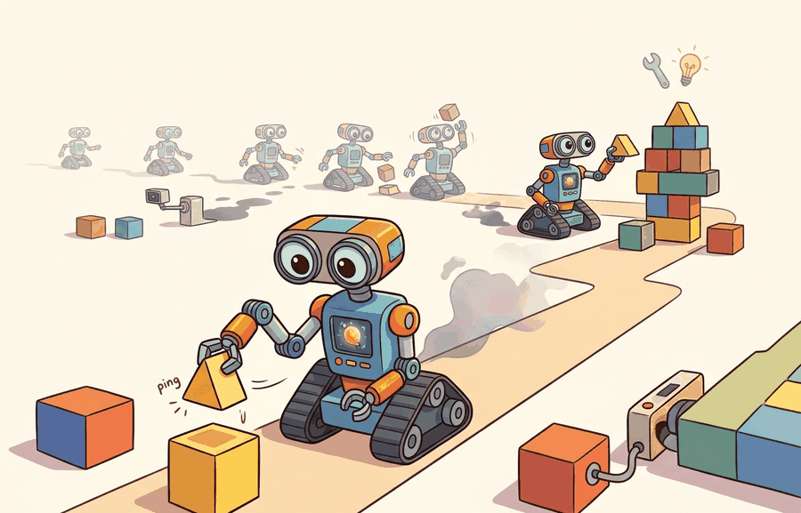

A long-horizon task is a short task that invited all its dependencies to dinner.
A Patient Dependency Graph

Long-horizon tasks is the temporal structure and recovery lens for open-world and lifelong embodiment. Long-horizon embodiment turns small errors into compounding failures. The agent needs subgoals, memory, monitoring, and repair, not only a longer prompt or rollout.
long-horizon tasks becomes useful when it is tied to a named interface, a replayable scenario, a failure diagnostic, and an artifact that records what changed in the action loop.
The key question is practical: Which subgoals can be verified, which failures require backtracking, and what state must persist across the task?
A representation earns its place when it changes the measurable action interface. In long-horizon tasks, the reader should keep asking which decision becomes easier, safer, or more reliable.
Theory
For Long-horizon tasks, the practical design rule is to make the interface inspectable before optimization begins: inputs, outputs, units, latency, bounds, and failure labels should all be visible in the saved artifact.
The mechanism in Long-horizon tasks is the contract between representation and action. Name what enters the module, what leaves it, which assumptions make that transformation valid, and which log would reveal a bad handoff.
Worked Example
Consider setting a table: find plates, clear space, fetch utensils, avoid people, and recover when an object is missing. Each step changes the next observation and the available actions.
# pip install gymnasium
import gymnasium as gym
env = gym.make("CartPole-v1")
obs, info = env.reset(seed=7)
for step in range(5):
action = env.action_space.sample()
obs, reward, terminated, truncated, info = env.step(action)
print(step, action, reward, terminated or truncated)The compact Gymnasium loop is useful for seeing one-step transitions. For long horizons, use behavior trees, task planners, ROS 2 actions, and logged replay; the tools handle cancellation, subgoal status, and recovery while the simple loop clarifies the transition contract.
Practical Recipe
- Write the observation, action, and success metric before choosing a model.
- Build a baseline that is simple enough to debug by inspection.
- Add the library implementation only after the baseline behavior is understood.
- Record failures as structured cases: perception error, state error, planning error, control error, or evaluation error.
- Run at least one perturbation test before trusting the result.
The common mistake in Long-horizon tasks is to celebrate the component score before checking the closed-loop handoff. The failure usually appears at the boundary: stale state, wrong frame, delayed action, saturated actuator, or metric that ignores the real task cost.
A long-horizon log should include subgoal graph, current node, precondition, action, observation, verification result, and recovery branch. The recovery branch is the difference between a plan and a brittle script.
Research blends language planners, world models, memory, and robot foundation models for long tasks. Evaluate with interruption, missing-object, and partial-progress cases rather than only completed demonstrations.
DreamerV3 (Hafner et al., 2023) is directly relevant to long-horizon tasks: its world model rolls out imagined future trajectories for planning without querying the environment, making it possible to reason over extended sequences of subgoals at inference time. The single-hyperparameter result means the same planning horizon and imagination depth work across tasks of very different lengths, which is the key property long-horizon embodied systems need. GR00T N1.5 (NVIDIA, 2024) addresses the complementary challenge of action grounding across embodiments: a cross-embodiment foundation model reduces the per-task data requirement for long-horizon manipulation by transferring low-level motor priors from the pretraining distribution.
Can you name the observation, state estimate, action, success metric, and most likely failure mode for long-horizon tasks? If not, the system boundary is still too vague.
Long-horizon tasks becomes useful when it is tied to a closed-loop contract for Open-World and Novelty-Robust Embodiment. The contract names the participants, observations, action authority, timing budget, logging artifact, and recovery rule. Without that contract, a system can look capable in a notebook while failing the first time a partner delays, a person corrects it, or a deployment scene changes.
For Long-horizon tasks, separate the conceptual claim, the systems claim, and the evidence claim. A plausible mechanism, a clean interface, and a closed-loop result are different claims; the section should keep their evidence separate.
| Tool or Library | Role in the Topic | Builder Advice |
|---|---|---|
| Gymnasium | Long-horizon tasks | Create controlled shifts that separate closed-world competence from open-world recovery. |
| LeRobot | Long-horizon tasks | Reuse recorded robot episodes for replay, adaptation, and regression checks. |
| ROS 2 | Long-horizon tasks | Log deployment events and safety interventions while the environment changes. |
| MuJoCo | Long-horizon tasks | Inject object, contact, and dynamics variation before real deployment. |
| PettingZoo | Long-horizon tasks | Model open-world interaction when other agents create changing goals or hazards. |
For Long-horizon tasks, the baseline and maintained-tool version should produce the same artifact schema and run on one task panel. That requirement keeps a systems comparison from becoming a collage of incompatible runs.
- Write a one-paragraph task contract with observation, action, success, and failure fields.
- Start with the smallest simulator, dataset, or wrapper that exposes the task contract faithfully.
- Run one deterministic smoke test and one perturbation test before scaling.
- Save a single result artifact containing configuration, seed, metrics, videos or traces, and failure labels.
- Compare methods only when one script evaluates them on the same task panel.
When Long-horizon tasks fails, avoid labeling the whole method as weak. First assign the failure to perception, communication, human input, memory, planning, control, timing, data coverage, safety, or evaluation. Then rerun one controlled perturbation that isolates the suspected cause. This pattern turns a disappointing rollout into a reusable diagnostic asset.
Agent Checklist Applied
The 42-agent production pass treats long-horizon tasks as a buildable system, not a definition. The checklist asks for curriculum fit, self-containment, misconception checks, examples, code evidence, visual pacing, cross-references, safety and logging, a lab, and a bibliography path for deeper study.
For Long-horizon tasks, connect partial observability, exploration, memory, robustness, and evaluation through a lifelong-learning log that records what changed and how the robot noticed.
A common misconception is that longer context solves long-horizon control. The diagnostic question is: can the system verify progress and repair a failed subgoal without restarting?
Write a six-step household plan with one missing precondition. Add a verifier and recovery branch for each step.
A long-horizon task is a short task that invited all its dependencies to dinner.
Technical Core
Long-horizon tasks needs a topic-native core: variables, equations or system contracts, an algorithmic procedure, an expected output, and a failure diagnosis. Figure 51.3.T summarizes the chain this section must preserve when moving from a teaching example to a real embodied system.
$V^\pi(s_t,g_{1:H})=\mathbb E\!\left[\sum_{k=t}^{T}\gamma^{k-t}r_k \mid s_t,g_{1:H}\right],\quad g_{1:H}=\text{subgoal sequence}$
Long-horizon open-world tasks stress memory, replanning, and delayed credit. The agent must preserve a subgoal structure while admitting that intermediate observations, object availability, and human instructions can change long after the initial plan was formed.
- Decompose the task into subgoals with explicit completion tests and fallback conditions.
- Cache the assumptions behind each subgoal, such as object availability or map reachability.
- Revalidate those assumptions at every horizon boundary and replan only the affected suffix.
- Report success not only at the final task level, but also by subgoal completion, repair count, and time lost to replans.
| Pressure | Short-Horizon Policy Behavior | Needed Upgrade |
|---|---|---|
| Delayed reward | Overfocuses on immediate progress. | Subgoal values or planning lookahead. |
| Scene change mid-task | Commits to stale plan prefixes. | Assumption checks and replanning. |
| Instruction revision | Treats new command as noise. | Task-memory update and authority switch. |
| Sparse failure signal | Finds out too late that one subgoal failed. | Intermediate completion tests. |
# Track subgoal completion and repair events.
trace = [
{"subgoal": "find_cart", "done": True, "repair": 0},
{"subgoal": "reach_lab", "done": False, "repair": 1},
{"subgoal": "reroute_around_closed_door", "done": True, "repair": 1},
]
completed = sum(step["done"] for step in trace)
repairs = sum(step["repair"] for step in trace)
print("completed", completed, "repairs", repairs)completed 2 repairs 2
The final task might still succeed, but two repair events tell a very different story about competence and deployment cost. In long-horizon embodiment, this intermediate trace often carries more design information than the final success bit.
Long-horizon evaluation fails when all adaptation is hidden inside one end score. Always log which subgoal assumptions broke and how often replanning occurred, otherwise open-world brittleness disappears inside a single aggregate success rate.
Long-horizon agents need explicit subgoals, verification, memory, and repair paths.
Design a method-matched experiment for Long-horizon tasks. Specify the environment, observation schema, action interface, metric, and one perturbation that targets the section's core assumption.
Section References
Parisi, G. I. et al. Continual Lifelong Learning with Neural Networks: A Review. Neural Networks, 2019.
Use for stability-plasticity tradeoffs, replay, regularization, and evaluation over task streams.
Kirkpatrick, J. et al. Overcoming catastrophic forgetting in neural networks. PNAS, 2017.
Use for elastic weight consolidation and the limits of parameter-importance methods.